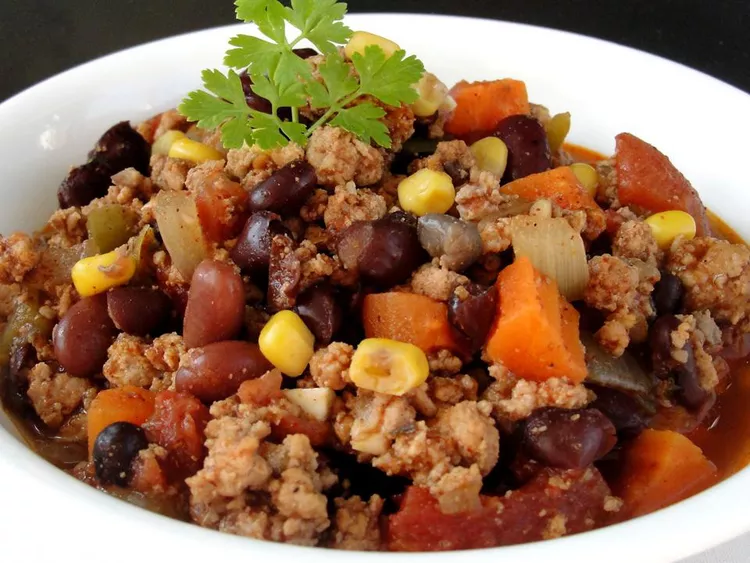

<!DOCTYPE html>
<html en="lang">
</html>
  <head>
    <meta charset="utf-8">
    <title>Black Bean Chickpea Chili</title>
  </head>


  <body>
    <a href="../index.html">Home</a>
    <em></em>
    <strong></strong>
    <h1>Black Bean Chickpea Chili</h1>
    
    <h2>Description</h2>
    <p>This easy, filling meal uses lots of fresh vegetables, 
        and some frozen or canned to make it easy. Ground turkey breast 
        can be added for meat lovers. Serve over wild rice with 
        shredded cheddar cheese, or with tortilla chips.</p>
    <h2>Ingredients</h2>
    <ul>
        <li>1 ½ tablespoons olive oil</li>
        <li>1 pound ground turkey (Optional)</li>
        <li>1 onion, chopped</li>
        <li>2 green bell peppers, seeded and chopped</li>
        <li>5 carrots, peeled and sliced into rounds</li>
        <li>1 tablespoon chili powder</li>
        <li>1 ½ teaspoons ground cumin</li>
        <li>1 teaspoon ground black pepper</li>
        <li>2 (14.5 ounce) cans canned diced tomatoes with their juice</li>
        <li>1 cup frozen corn</li>
        <li>1 (15 ounce) can black beans, drained and rinsed</li>
        <li>1 (15 ounce) can garbanzo beans, drained and rinsed</li>
        <li>1 ½ cups chicken broth</li>
    </ul>
        <h2>Steps</h2>
        <ol>
            <li>If using turkey, heat oil in a large saucepan over medium-
            high heat, and cook and stir the ground turkey for about 10 minutes,
             breaking it up with a spoon as it cooks, until the meat is no longer pink. 
             Remove the turkey meat and set aside, leaving oil in the pan.</li>
            <li>Place the onion, green peppers, and carrots into the saucepan, and 
            cook and stir for about 10 minutes, until the onion is translucent and 
            the vegetables are tender. Stir in the chili powder, cumin, and black 
            pepper, and pour in the diced tomatoes, frozen corn, black beans, garbanzo beans,
             and chicken broth. Bring the mixture to a boil.</li>
            <li>Place about 1 1/2 cups of the chili mixture into a food processor,
             and puree for about 1 minute until smooth. Pour the puree back into the 
             rest of the chili to thicken. Add the cooked turkey meat, and bring 
             the chili back to a simmer over medium-low heat.</li>
        </ol>
  </body>